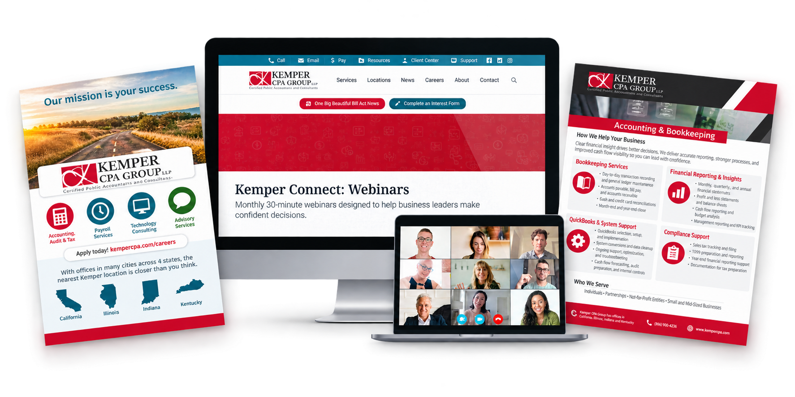
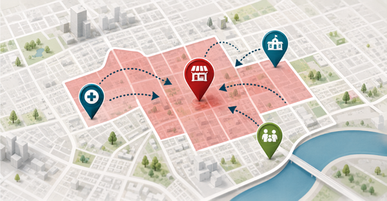

Professional Services Marketing
Building a marketing function for a growing professional services firm.
As the first employee hired solely to focus on marketing at Kemper CPA Group, I helped bring more structure, consistency, and strategy to marketing across a complex, multi-office organization — while building measurable audience growth across the firm's social channels.

A strong organization with untapped marketing potential.
Kemper CPA Group already had the scale, expertise, and service depth of a large professional services firm. With 26 offices, more than 400 employees, more than 80 partners, and five divisions, the organization also had significant opportunity to take a more intentional approach to marketing.
When I joined Kemper, I became the first employee hired solely to focus on marketing. Working closely with the Director of Growth, I helped shape strategy while independently managing and executing much of the firm's day-to-day marketing activity.


Turning individual efforts into a more intentional system.
One of the clearest opportunities was creating more consistency across recurring marketing activity. After joining Kemper in November 2025, I became the primary owner of social media across the firm's brands, introducing more intentional content planning, regular scheduling, service-focused campaigns, and ongoing performance reporting.
I also expanded the firm's channel presence by launching the Kemper Technology Consulting Instagram, Kemper Professional Recruiting Instagram, and Kemper Professional Recruiting LinkedIn accounts. This gave two growing divisions dedicated platforms for building awareness, sharing expertise, and reaching more relevant audiences.
Instead of treating channels independently, I began connecting social media, email, blogs, website content, recruiting, events, and service-line initiatives so they could support one another and tell a more consistent story.
I also established repeatable processes for recurring brand needs, including employee headshots, apparel logo requests, promotional items, and business cards. These systems created greater consistency while making it easier to support a large, decentralized organization.
Digital Marketing
Connecting content, search, and strategy.


.png)
03 / Measurable Social Growth
Building the audience — and documenting the results.
The shift toward more consistent, strategic social media management produced measurable audience growth during my first 10 months of channel ownership.
From January through August 2026, tracked content also generated 13,288 engagements and 10,078 documented clicks. Instagram click data was not provided by the platform, so the click total reflects only documented results.
Measurement note: follower growth compares the end-of-October 2025 baseline with August 2026. Detailed post-level performance tracking begins in January 2026, so pre-role engagement and impression comparisons are not available.
Reaching clients and prospects with measurable engagement.
Email marketing was another important part of the firm's digital communication mix. Campaign reporting provided a direct view into how audiences were responding to content distributed at scale.
The same reporting showed an unsubscribe rate of approximately 0.1%, providing another measure of audience retention while communications were delivered at significant volume.
Measurement note: figures above reflect the campaign-performance record available for my Kemper work. Earlier email performance was not documented in the materials available to me, so these figures are presented as documented performance rather than a pre-/post-role comparison.
Moving beyond awareness to support business development.
My role at Kemper brought me much closer to the lead-generation and business-development process. Marketing was not simply about creating visibility. It also needed to help clients and prospects understand the full range of services available through the firm.
With five divisions offering complementary services, cross-selling became an important part of the strategy. Service spotlights, blogs, website content, webinars, and social campaigns created opportunities to educate audiences while supporting broader growth initiatives.
This work also extended into SEO and website strategy. Using Semrush and ongoing website analysis, I supported content development and optimization designed to improve visibility while maintaining the professional, advisory tone expected from the firm.


One brand across many audiences.
Marketing across 26 offices, four states, more than 80 partners, and five divisions requires balancing firmwide consistency with local needs and priorities.
Nearly every initiative involves different stakeholders, audiences, and business objectives. My role requires understanding when an approach should be customized and when standardization creates a stronger experience for the firm as a whole.
It also requires moving comfortably between strategy and execution. On any given initiative, I may help determine the approach, write the content, coordinate with the web team, develop supporting assets, plan distribution, and evaluate performance.
The Impact
A more structured and connected marketing approach.
Thinking beyond the individual deliverable.
This role changed the way I think about marketing. Instead of focusing only on individual campaigns or deliverables, I began thinking more about the systems, strategy, business goals, and relationships that connect them.
It strengthened my ability to work across a complex organization, make strategic recommendations, manage competing priorities, and carry ideas from planning through execution.